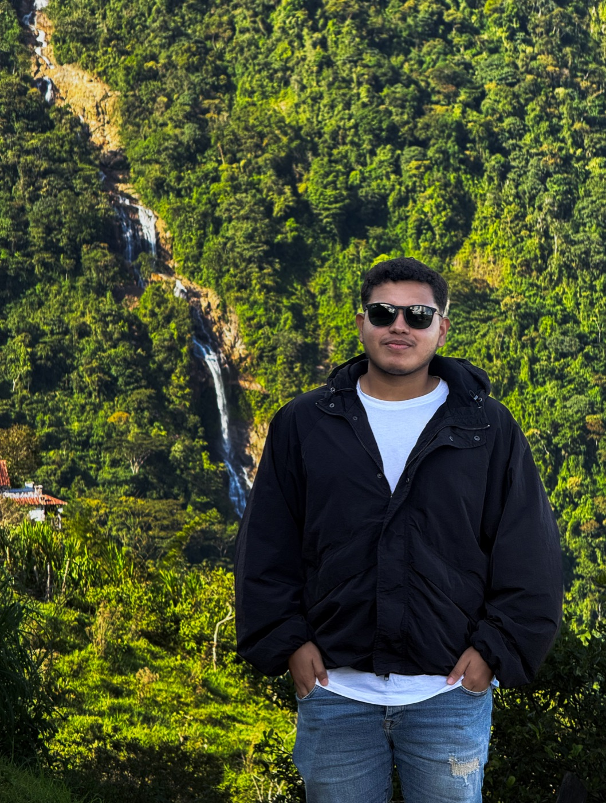

TOP1en el portafolio
Película interactiva · Tú decides
LINCE
Andrés vive pesadillas que no lo dejan en paz. Su padrino, El Lince, sabe algo sobre la muerte de su padre. Tú eliges: ¿confiar en él o buscar venganza?
01 / 03

Acerca de mí
Me apasiona contar historias con imagen, movimiento y sonido. Combino curiosidad, sensibilidad visual y herramientas digitales para crear proyectos memorables.
Desde una identidad visual hasta un video para redes, busco que cada detalle comunique algo.
Trabajemos juntos →Modelo 3D · Mi marca
Mi logo es una sola línea: nace en un punto de grabación y termina en un play. Lo modelé en 3D para que puedas tomarlo, girarlo y verlo desde cualquier ángulo.
Arrastra para girar
Mis servicios
Del guion a la pantalla y del boceto a la web: diseño, grabo, edito, animo y programo. Todo con una misma mirada creativa.
Videos corporativos, cortometrajes, videoclips y piezas con mensaje, como mi proyecto Salud mental. Me encargo de la idea, el guion, el rodaje, la edición y el color.
Portafolios, landing pages y sitios responsive con formularios que funcionan, rápidos y bien diseñados.
Historias donde el público decide, como mi película LINCE: rutas que se ramifican, botones dentro del video y una web que reproduce la historia según cada elección.
Logos animados, títulos, transiciones e infografías en movimiento que le dan ritmo a tu marca.
Reels, TikToks y campañas con formato vertical, ganchos en los primeros segundos y subtítulos dinámicos.
Identidad visual, banners web, portadas y piezas publicitarias en Photoshop e Illustrator, como el banner de esta página.
Retratos, producto y eventos, con revelado y retoque en Lightroom y Photoshop para que cada imagen cuente algo.
Si tu idea mezcla varias cosas o no está en la lista, cuéntamela y la armamos juntos.
Proyectos seleccionados
Video reel
Proyecto audiovisual: Salud mental.